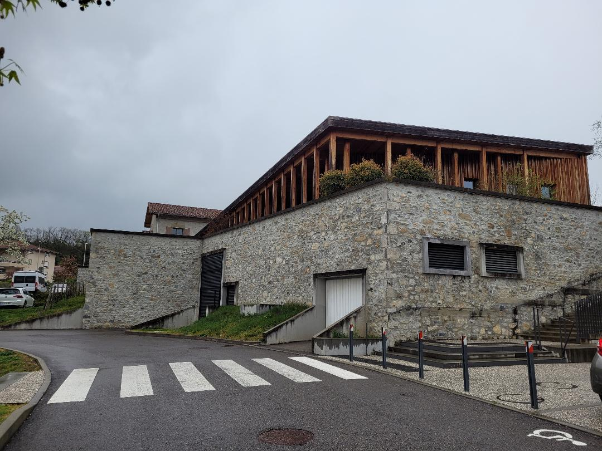
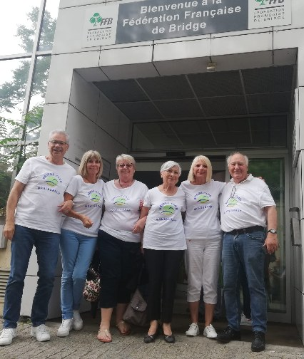

Convivialité
Un événement chaque mois : tournoi à thème avec repas (tournoi italien, breton…), sortie ou voyage à la rencontre d’un autre club.
Un club détendu et convivial au cœur du Grésivaudan, à deux pas de Grenoble.
Le Club de Bridge de Montbonnot, fort d’une équipe d’animation très dynamique, organise des Rondes de France les lundis et mercredis après-midi, toute l’année. D’autres tournois rythment la vie du club : tournoi de rentrée, Tournoi des Dindes, tournois au profit d’associations caritatives comme Espoir Isère contre le Cancer.
Ici, on joue au bridge dans de bonnes conditions et on progresse dans la bonne humeur.

Un événement chaque mois : tournoi à thème avec repas (tournoi italien, breton…), sortie ou voyage à la rencontre d’un autre club.
Une école de bridge avec des moniteurs diplômés FFB, ouverte aux débutants comme à ceux qui reprennent après des années d’arrêt.
L’un des clubs les plus « compétitifs » du département, qui engage de nombreuses équipes en interclubs — sans jamais l’imposer.
Des tournois organisés au profit d’associations, comme Espoir Isère contre le Cancer, avec les clubs voisins.
Le club s’est construit au fil des saisons autour d’une idée simple : un bridge exigeant mais détendu, où chacun trouve sa place. Il s’appuie aujourd’hui sur une école de bridge partagée avec les clubs voisins de Biviers, Meylan et Saint-Ismier, et sur un réseau de sorties et de tournois conviviaux dans toute la vallée.

Derrière chaque tournoi, chaque cours et chaque sortie, il y a une équipe de bénévoles qui donne de son temps avec le sourire.
Envie de nous donner un coup de main ou simplement de faire connaissance ? Venez nous voir un lundi ou un mercredi après-midi.
Composition du conseil d’administration 2023-2024, telle que publiée par le club. Pour joindre l’équipe : page Contact.
adhérents
licenciés
responsables et membres du conseil d’administration
Saison 2022-2023, chiffres publiés par le club. Année de création : à compléter.